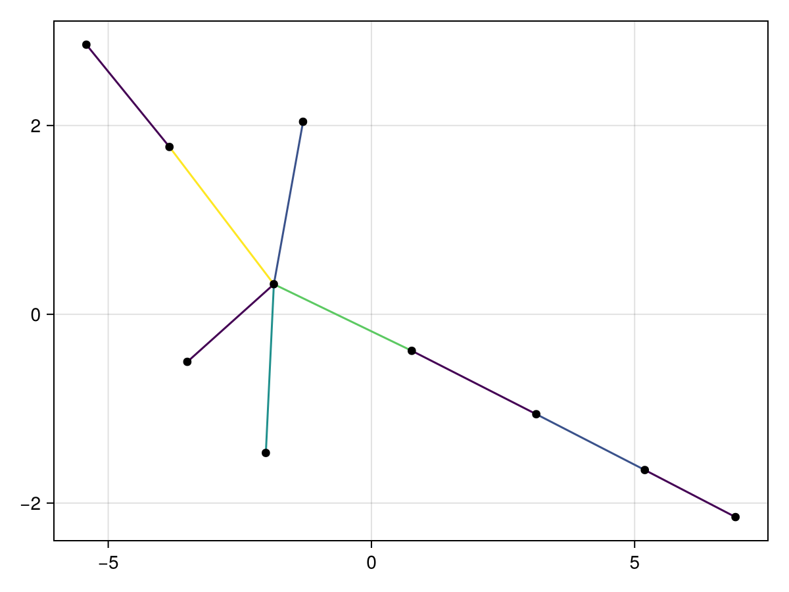
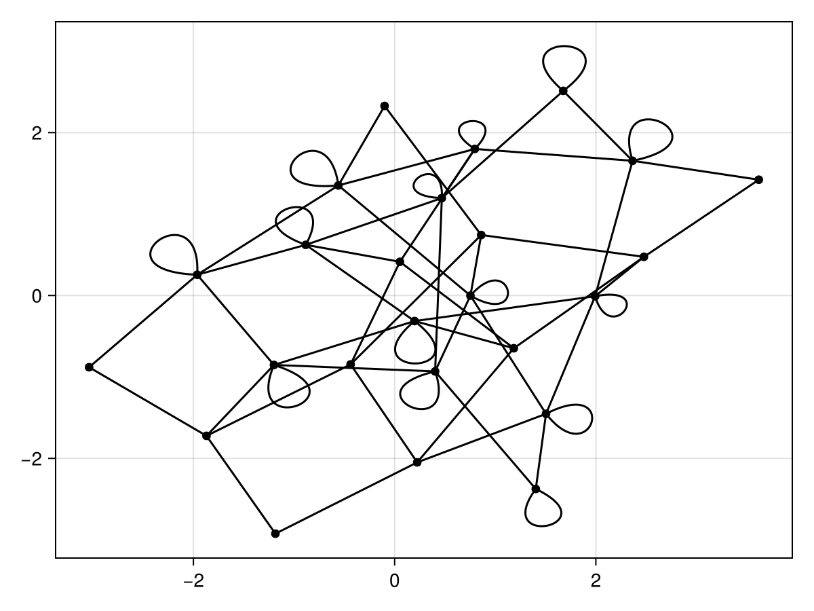
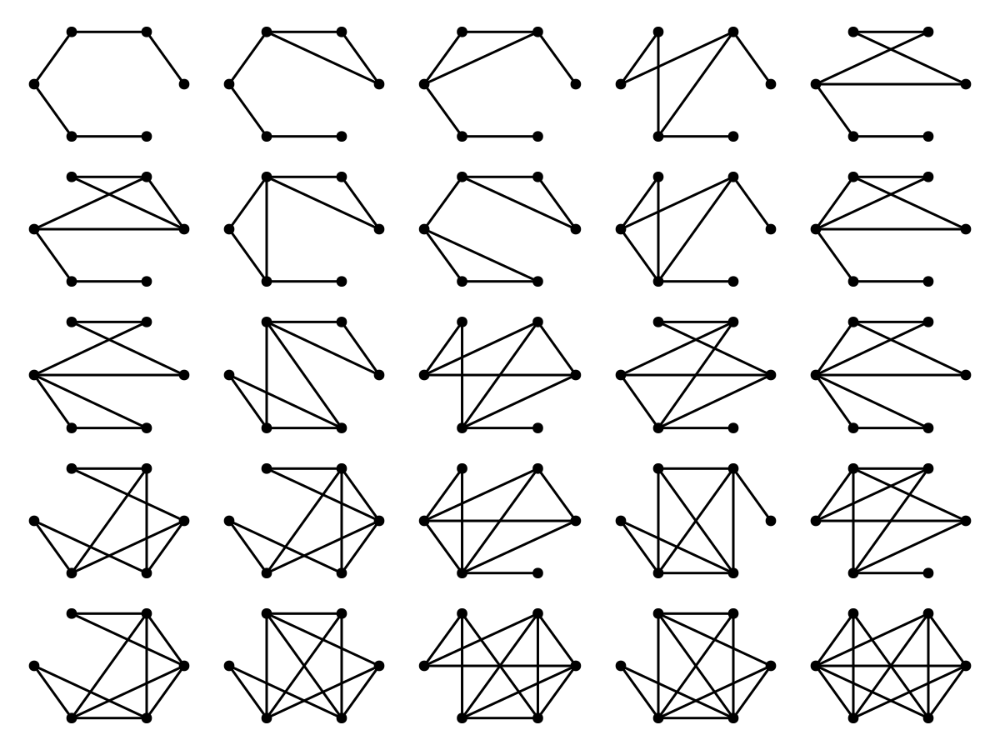

Orbits of Graph States under Local Complementation
A Julia wrapper for the databases of quantum graph states equivalent under local complementation from
- https://www.ii.uib.no/~larsed/entanglement/ (related to https://arxiv.org/abs/1011.5464)
- https://zenodo.org/records/3757948 (related to https://arxiv.org/abs/1910.03969)
All of the wrapped resources are under the original authors's copyright. This repository is just for convenient hosting and wrapping in a Julia library.
Installation
Install julia using juliaup. Then, from the julia terminal press ] to enter "package mode" and type add LCOrbits. If you want the currently unpublished dev version of the library do add https://github.com/QuantumSavory/LCOrbits.jl instead.
lcorbits_summary
Use to get the database from arxiv:1011.5464, containing the equivalency classes of graph states (i.e. orbits), without explicitly listing all the graph states in each orbit.
However, the minimal edge state and minimal chromatic index state for each orbit are listed.
Keys are:
EC- the equivalency class index (in the standard order suggested by the authors)orbitsize- the size of the orbitvertices- the number of vertices of the graphcontains2color- whether there is a two colorable graph in the orbitminedges- the minimal edges (and the corresponding chromatic index, and how many non-isomorphic graphs have that property)minchromidx- the minimal chromatic index (and the corresponding number of edges, and how many non-isomorphic graphs have that property)same_min_edgeschromidx- whether the previous two are the sameschmidtmin- Schmidt measure lower boundschmidtmax- Schmidt measure upper boundschmidtsame- whether the bounds matchminedge_repr- the minimal edge representationminedge_repr_colors- coloring for the minimal edge representationminchromidx_repr- the minimal chromatic index representationminchromidx_repr_colors- coloring for the minimal chromatic index representationsame_min_edgeschromidx_repr- whether the minimal edge representation and the minimal chromatic index representation are the samebipartrankidx6- rank index for bipartite splits with 6 vertices in the smaller partitionbipartrankidx5- rank index for bipartite splits with 5 vertices in the smaller partitionbipartrankidx4- rank index for bipartite splits with 4 vertices in the smaller partitionbipartrankidx3- rank index for bipartite splits with 3 vertices in the smaller partitionbipartrankidx2- rank index for bipartite splits with 2 vertices in the smaller partitioncardmult- the cardinality-multiplicities
Example: plotting a minimal edge representation state from a given orbit
julia> using LCOrbits, GraphMakie, CairoMakie
julia> orbits = LCOrbits.lcorbits_summary(10); # only graphs of size 10
julia> orbit42_10 = orbits[42,:] # the 42nd orbit
DataFrameRow
Row │ EC orbitsize vertices contains2color minedges ⋯
│ Int64 Int64 Int64 Bool NamedTuple ⋯
─────┼────────────────────────────────────────────────────────────────────────────────
42 │ 628 120 10 true (minedges = 9, chromidx = 5, size ⋯
julia> graphplot(orbit42_10.minedge_repr; edge_color=orbit42_10.minedge_repr_colors)
lcorbits_full
Use to get the database from arxiv:1910.03969, which includes the entirety of each orbit (each graph state in the orbit, not only the minimal states).
Keys in addition to lcorbits_summary are:
orbit- a list of all graphs (up to isomorphism) in the orbitorbit_metagraph- the orbit itself shown as a graphorbit_metagraphedgeops- a mapping from an edge of the orbit metagraph to the list of local complementations that perform the transition (TODO unfinished)
Example: plotting the metagraph describing the states and possible complementations in a given orbit
julia> using LCOrbits, GraphMakie, CairoMakie, NetworkLayout
julia> df = LCOrbits.lcorbits_full();
julia> i = findfirst(>(20), df.orbitsize) # find the first orbit with more than 20 states
12
julia> firstlargeorbit = df[i,:];
julia> graphplot(firstlargeorbit.orbit_metagraph)
Continuing example: plotting all the states in the given orbit
julia> f = Figure()
julia> n = firstlargeorbit.vertices
6
julia> for (i,g) in enumerate(firstlargeorbit.orbit)
x = ((i-1)÷5)+1
y = rem(i-1,5)+1
a = Axis(f[x,y])
graphplot!(a,g;layout=Shell())
hidedecorations!(a)
hidespines!(a)
end
julia> current_figure()